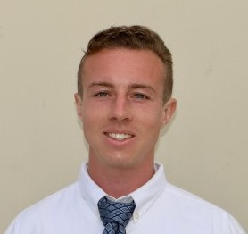

I am a Data Scientist and PhD student in Computer Science at FAU, with an MS in AI and BS in CS. My main career and academic interests are in Data Science and AI Research. I have previously worked in positions with FAU, the Naval Information Warfare Center, and the Department of the Navy in Data Science and AI Research roles. I have a part time interest in health and fitness, having previously worked as a Trainer and Yoga Instructor. I also compete in collegiate and international athletics, and have achieved 1st place at the college national championship and 4th place at the world championship semifinals.
December 2025 – Present | Fort Lauderdale, FL
Python, SQL, Excel, Dbeaver, Bash, C++, WSL, Tableau, AWS (Redshift, Sagemaker, Bedrock)
April 2024 – October 2025 | Orlando, FL
MATLAB, Python, Bash, C++, SysML, HyperV, Red Hat Enterprise Linux
May 2023 – September 2023 | San Diego, CA
Python (Scikit-learn, Numpy, Pandas, Matplotlib), Jupyter
May 2022 – May 2023 | Boca Raton, FL
Python (Numpy, Pandas, Matplotlib, Seaborn, PyTorch), Jupyter, Bash, HPC
Languages: Python (Numpy, Pandas, Polars, Matplotlib, Plotly, Scikit-learn, TensorFlow, PyTorch, XGBoost, NLTK, RegEx, SQLite, PySpark) |
SQL | MATLAB | C++ | Git | Bash | Java (OpenNLP) | HTML | CSS | JavaScript
Tools: VS Code | Jupyter | GitHub | Dbeaver | AWS (Redshift, Sagemaker, Bedrock) | Microsoft Office (Word, Powerpoint, Excel) | Cameo Systems Modeler |
HyperV | Simulink | MCP | RAG | WEKA | Eclipse | Code Composer Studio | Brackets | MySQL | HPC | Violet UML | Apache NetBeans | VirtualBox |
WSL | Jira | Confluence | Docker | LM Studio | Label Studio
Certifications: DoD Secret Security Clearance (4/22/2024) | IBM AI Engineering (In Progress) | IBM Data Science (12/14/2025) |
DAU Engineering Technical Management (4/28/2025) | OMG SysML Fundamental Model Builder (9/27/2024) | OMG SysML Model User (8/23/2024) |
Six Sigma Yellow Belt (In Progress) | NSF – Graduate Traineeship in Data Science Technologies and Applications (8/8/2023) |
Yoga Alliance – RYT 200 Hour (12/10/2023) | AHA – CPR/AED (3/5/2022) | NASM – CPT (6/26/2022) | ARC – Shallow Water Lifeguard CPR and First Aid (12/30/2022)
Performed analysis on collected field data of deployed energy meters to identify data absences, anomalies, and feature relationships. Developed an algorithm to determine which energy meters are ideal for next-gen replacements while maximizing business value through incorporation of optimal selection metrics derived from meter features. Presented and illustrated findings to NextEra technical and executive team members.
Utilized REST API and webscraping to retreive, clean and compile SpaceX launch data into an organized dataset. Exploratory data analysis performed to derive insights, vizualize relationships, train machine learning classification models, and evaluate model performance in predicting spaceship launch success rates.
Experimented with foveated image compression for improving efficiency while maintaining classification performance.
Implemented a network intrusion prediction model using Python and Cybersecurity datasets.
Developed and tested target range prediction models using UAV simulation data.
Implemented public and private key encryption algorithms including DES and ElGamal using C++.
Implemented a content-based media recommendation system in Python.
Digital Image Processing | Computer Data Security | Data Mining and Machine Learning | Reinforcement Learning | Software Engineering |
Computer Performance Modeling | Practical Aspects of Modern Cryptography | Advanced Internet Systems | Natural Language Processing |
AI in Medicine | Deep Learning | Information Retrieval | Artificial Intelligence | Intro to Data Science | Computational Foundations of AI |
Object-Oriented Design and Programming | Principles of Software Engineering | Engineering Design | Intro to Artificial Intelligence |
Python Programming | Computer Operating Systems | Intro to Data Communications | Intro to Database Structures | Design/Analysis of Algorithms |
Form Lang & Auto Theory | Intro to Internet Computing | Intro to Microprocessor Systems | Stochastic Models for CS | Data Structure/Algorithm Analysis |
Introduction to Logic Design | Foundations of Computer Science | Introduction to Programming in C | Introduction to Program Logic | Microcomputer Applications
Fall 2022 – Present
Achieved 1st place at the 2026 NCA College Cheer National Championship and 4th place at the 2025 cheer world
championship semifinals.
Fall 2021 – Fall 2024
Completed an NSF funded program to introduce distinguished students to careers in AI. Served as a panelist to share
program outcomes and insights to congressional staff members in Washington DC.
Spring 2024 – Fall 2024
Awardee for the DOD SMART Scholar program which funds distinguished students involved in federal employment.
Fall 2023 – Spring 2024
Served on a board comprised of students and FAU faculty managing all campus recreation activities and budget.
Fall 2023 – Spring 2024
Assisted in the management and oversight of all sport club programs at FAU. Increased the sport club program budget
by approximately 50% through the usage of university reimbursement programs.
Fall 2022 – Spring 2024
Coordinated all club processes for the FAU Weightlifting Club including club formation and official registration.
Summer 2022 – Fall 2023
Participated in an NSF funded cohort of graduate students that engage in academic research and entrepreneurship.
...